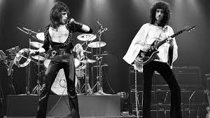
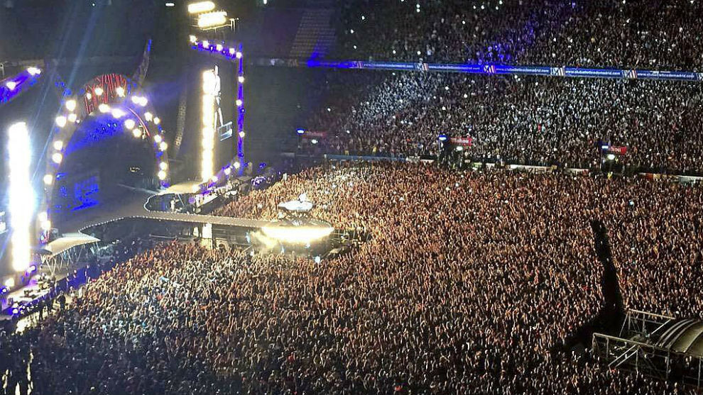
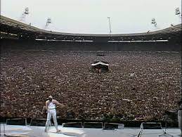
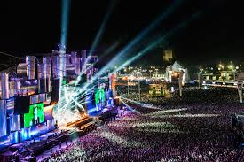

ROCK MUSIC
 El rock es un término amplio que agrupa una variedad de géneros de música popular originados
como rock and roll a principios de la década de 1950 en Estados Unidos y que evolucionó en un
gran rango de diferentes estilos en los 60, particularmente en Reino Unido y Estados Unidos.12
Posee sus raíces en el rock and roll de los 40 y 50, proveniente de la combinación de géneros
anteriores como el blues, rhythm and blues y el country. La música rock también se nutrió fuertemente
del blues eléctrico y el folk, e incorporó influencias del jazz, la música clásica y otras fuentes.
El rock se ha centrado en la guitarra eléctrica, normalmente como parte de un grupo integrado por
cantante, bajo, batería y, algunas veces, instrumentos de teclado como el órgano y el piano. Típicamente,
el rock se centra en las canciones, habitualmente con compás de 4/4 (a diferencia del compás 8/8
generalmente empleado en primeras formas de r&b y el rock and roll) usando una estructura verso-estribillo,
sin embargo el género se ha vuelto extremadamente diverso y las características musicales comunes son
difíciles de definir. Como la música pop, las letras se centran a menudo en el amor romántico,
pero también tratan un rango amplio de otros temas con un enfoque frecuente en lo social y lo político.
El rock es un término amplio que agrupa una variedad de géneros de música popular originados
como rock and roll a principios de la década de 1950 en Estados Unidos y que evolucionó en un
gran rango de diferentes estilos en los 60, particularmente en Reino Unido y Estados Unidos.12
Posee sus raíces en el rock and roll de los 40 y 50, proveniente de la combinación de géneros
anteriores como el blues, rhythm and blues y el country. La música rock también se nutrió fuertemente
del blues eléctrico y el folk, e incorporó influencias del jazz, la música clásica y otras fuentes.
El rock se ha centrado en la guitarra eléctrica, normalmente como parte de un grupo integrado por
cantante, bajo, batería y, algunas veces, instrumentos de teclado como el órgano y el piano. Típicamente,
el rock se centra en las canciones, habitualmente con compás de 4/4 (a diferencia del compás 8/8
generalmente empleado en primeras formas de r&b y el rock and roll) usando una estructura verso-estribillo,
sin embargo el género se ha vuelto extremadamente diverso y las características musicales comunes son
difíciles de definir. Como la música pop, las letras se centran a menudo en el amor romántico,
pero también tratan un rango amplio de otros temas con un enfoque frecuente en lo social y lo político.
EL MEJOR CONCIERTO DEL ROCK
imagenes de conciertos de rock



